Ten refinements for clearer play
- Compact recruitment header and refresh controls
- Clear explanations on unavailable hire buttons
- Clearable, consistently focused roster and inventory searches
- One-tap reset for empty filtered results
- Clickable equipment-upgrade summary
- Neutral, readable disabled buttons
- Compact resource totals with exact accessible amounts
- Readable activity strip with 44px touch targets
- Compact special-activities disclosure
- Softer world and regional map frames and readable legends
9 phone configurations; 41 interaction assertions; eight amount-format checks; TypeScript passed. Web previews use isolated fixture data.
HeroesScreen · Narrow · 320
top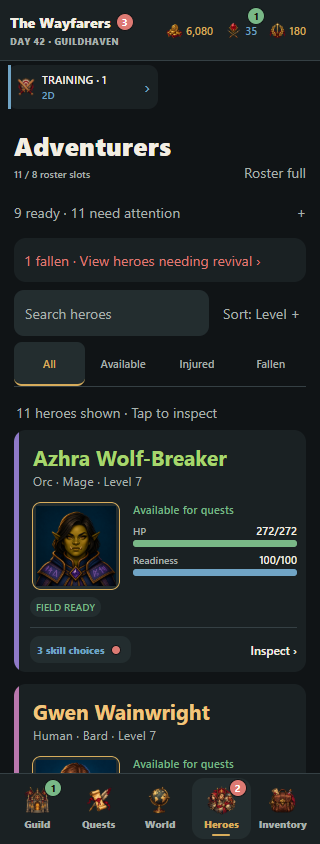
bottom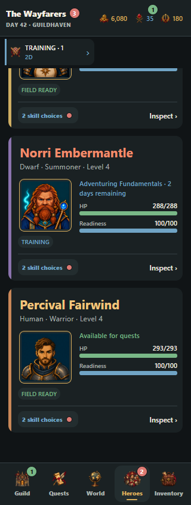
empty search
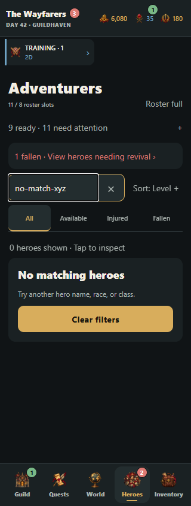
sort open
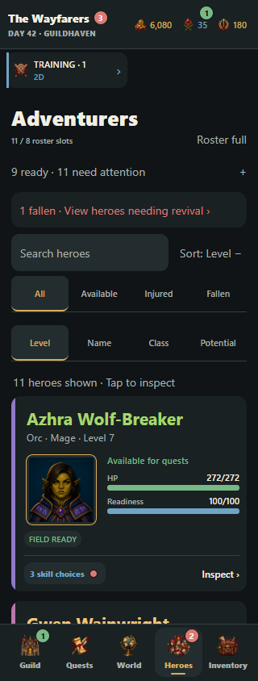
fallen
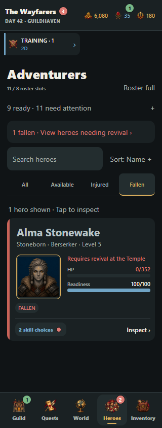
InventoryScreen · Narrow · 320
top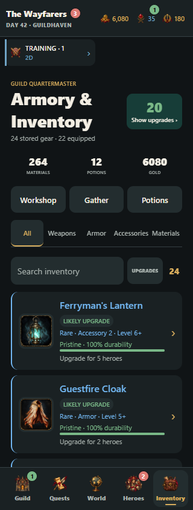
bottom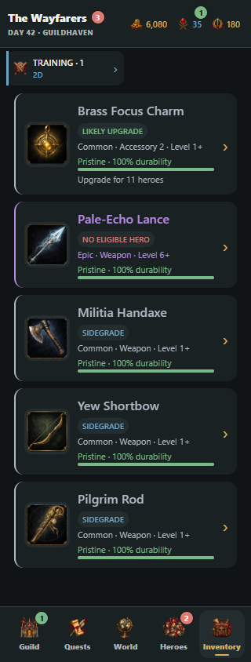
empty search
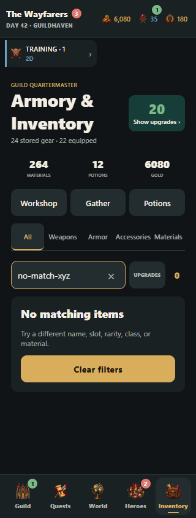
upgrades
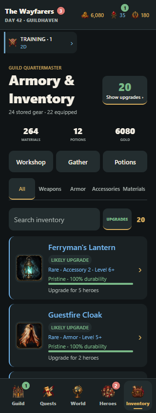
RecruitmentScreen · Narrow · 320
top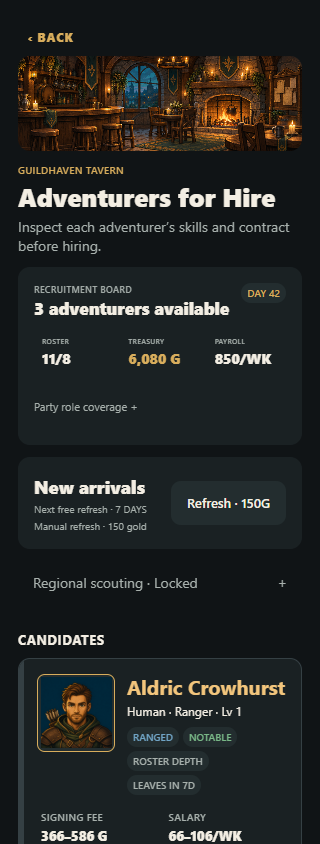
bottom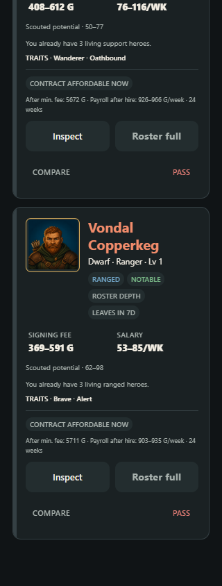
scouting open
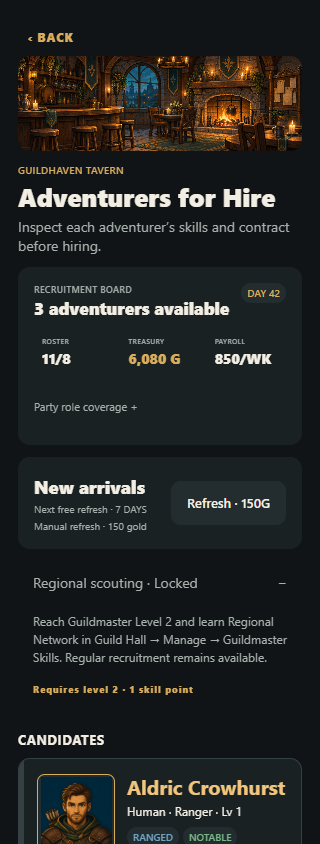
QuestSelectionScreen · Narrow · 320
top bottom
bottom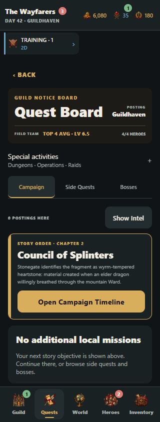
activities
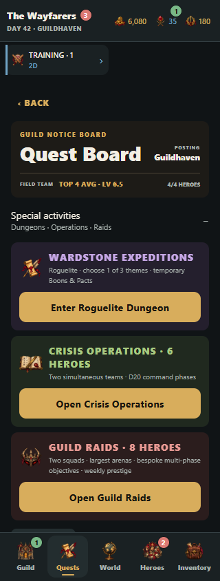
WorldMapScreen · Narrow · 320
top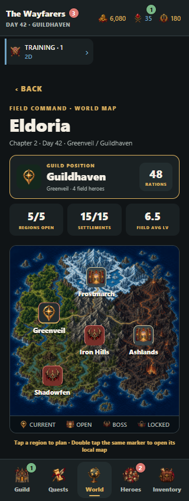
bottom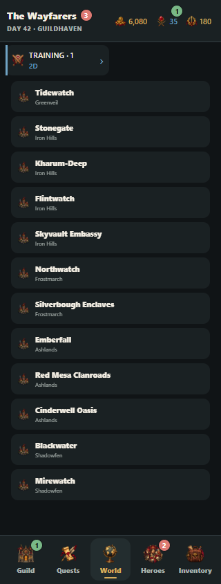
region selected
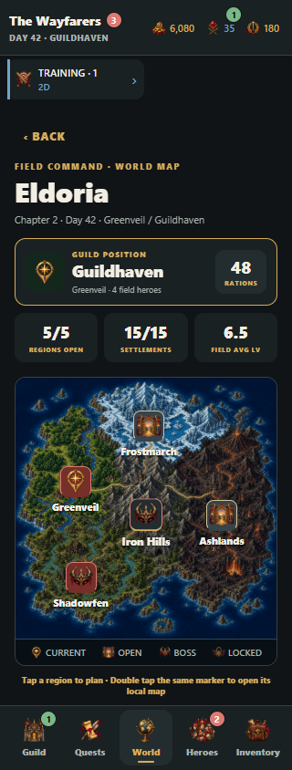
RegionMapScreen · Narrow · 320
top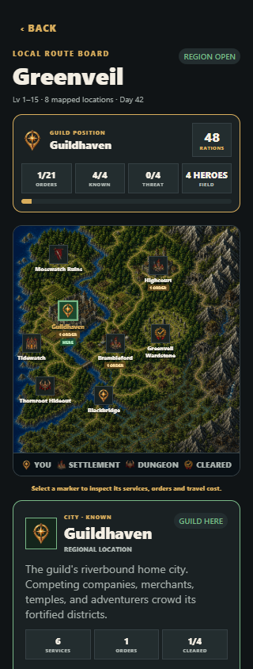
bottom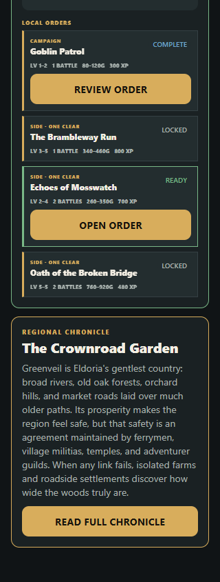
GuildScreen · Large · 320
top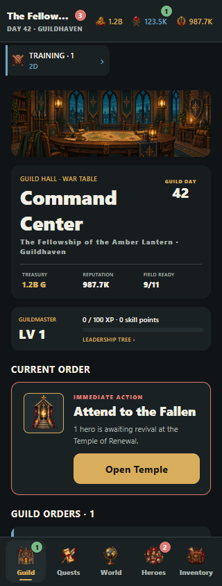
bottom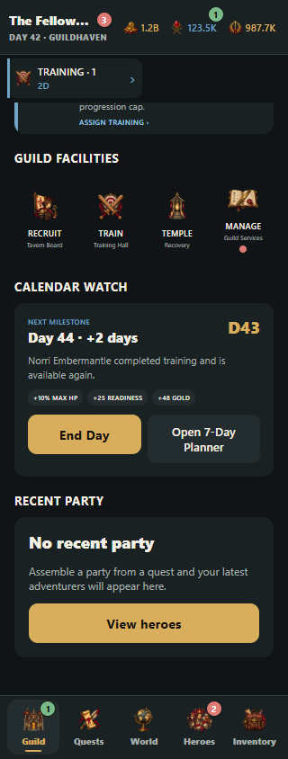
HeroesScreen · HighContrast · 390
top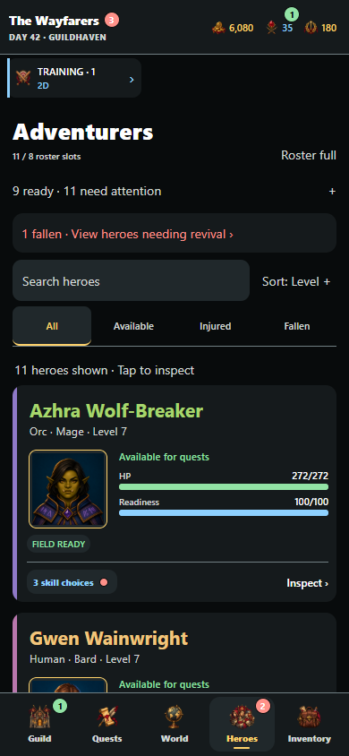
bottom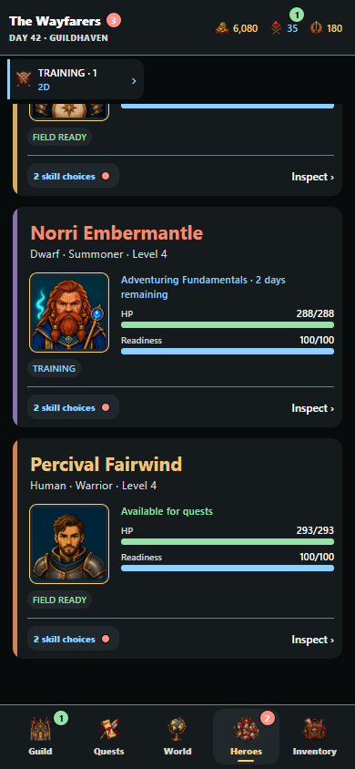
empty search
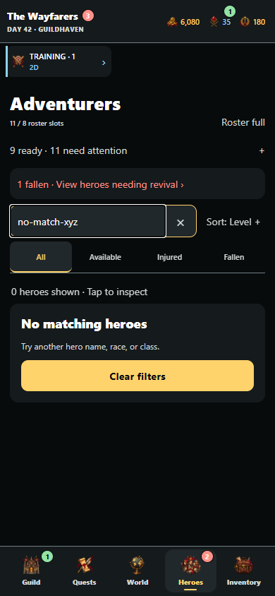
sort open
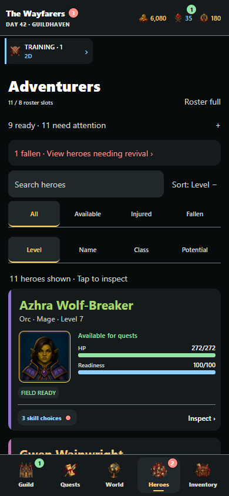
fallen
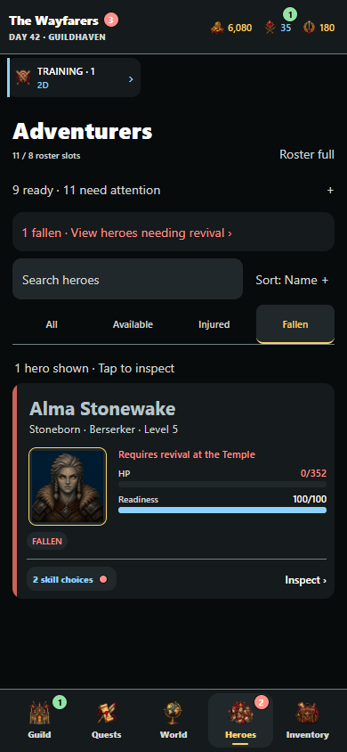
HeroesScreen · Empty · 320
top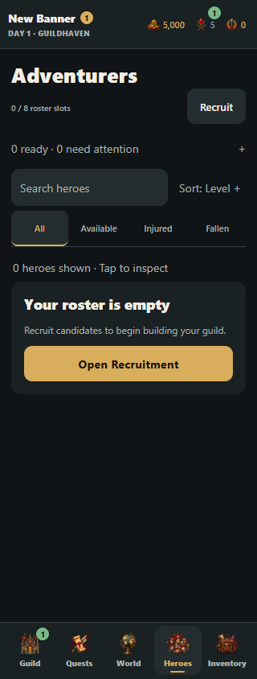
bottom